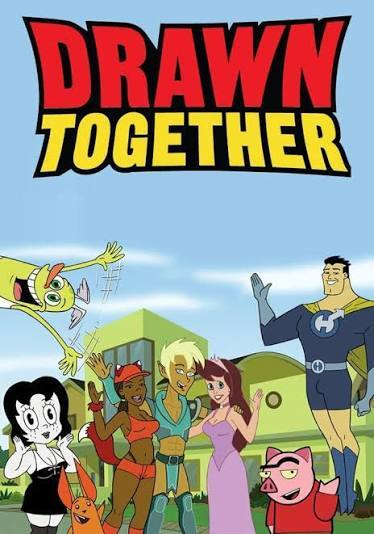

En esta página hablaré sobre una de las series animadas que más me gusta. Se llama La Casa de los Dibujos y es una caricatura para adultos que combina comedia, parodias y personajes muy diferentes entre sí.
La Casa de los Dibujos, conocida originalmente como Drawn Together, es una serie creada por Dave Jeser y Matt Silverstein para MTV. La historia trata de ocho personajes inspirados en diferentes tipos de caricaturas que viven juntos dentro de una misma casa mientras son grabados por cámaras, como si participaran en un reality show.
Elegí este tema porque desde hace varios años es una de las series que más me entretienen. Me gusta que cada personaje tenga una personalidad diferente y que cada episodio presente situaciones inesperadas y muy divertidas.

En la imagen aparecen los personajes principales que viven dentro de la casa.
Todos los personajes están inspirados en estilos de caricaturas diferentes, por eso cada uno tiene un diseño muy distinto.
Aunque la serie terminó hace varios años, todavía tiene una comunidad de seguidores que continúa recordando sus episodios.
Escogí esta serie porque me parece muy divertida y diferente a otras caricaturas. Lo que más me gusta son sus personajes y la manera en que hacen parodias de programas famosos. Al investigar aprendí más sobre su historia y sobre los creadores de la serie. En mi opinión es una caricatura muy entretenida que sigue siendo recordada por muchas personas.